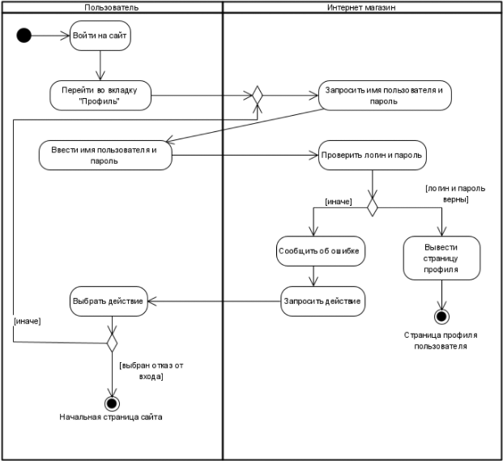
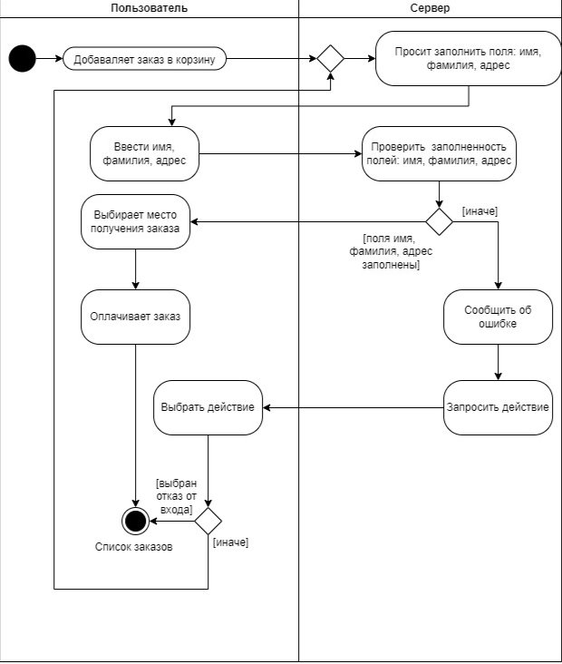
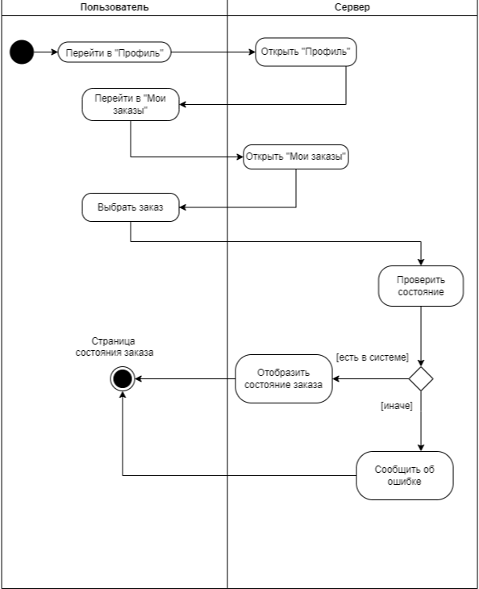

На данный момент у большинства интернет-магазинов (https://hyperpc.ru/, https://lightflightpc.ru/, https://digital-razor.ru/) существует такая система, которая решает очень маленький спектр проблем взаимодействия пользователя с системой, поэтому нашей целью является создание такой системы, которая будет опираться больше на упрощение взаимодействия пользователя с системой.
Схема процесса проходить авторизацию
Схема процесса сделать заказ
Схема процесса проверить состояние заказа
Требования к производительности и объемам информации
Требования к доступности и восстановлению
Требования к информационной безопасности
Со стороны клиента
Требования к информационной безопасности
Со стороны сервера